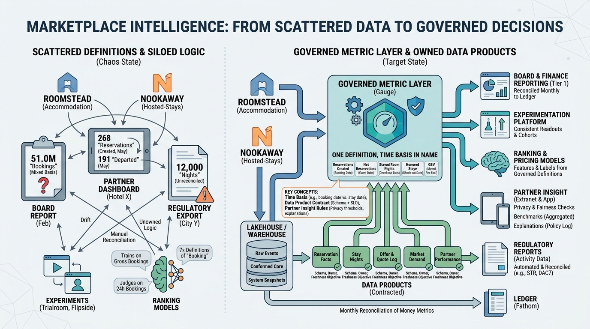

Part VIII — PLATFORM: The Distributed System Underneath
Knowing the Marketplace: Data Platform, Metrics and Partner Insight

Image generated by Google Gemini (gemini-3-pro-image-preview)
Part VIII — PLATFORM: The Distributed System Underneath

Image generated by Google Gemini (gemini-3-pro-image-preview)